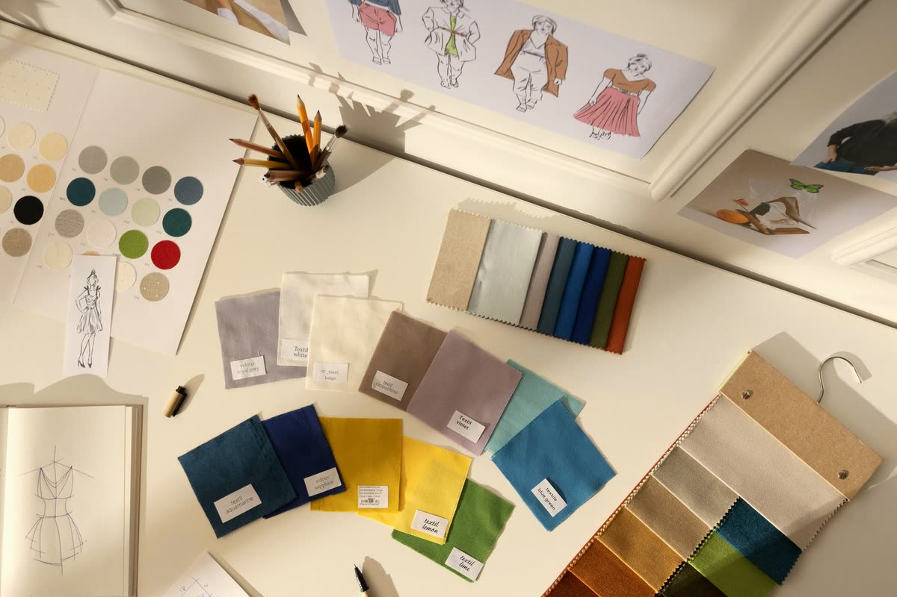

CURRICULUM
이론과 현장을
잇는 커리큘럼.
색채·스타일·커뮤니케이션의 기초부터 실전 컨설팅까지, 단계별로 설계된 과정을 통해 현장에서 활동할 수 있는 전문가를 양성합니다.
색채·스타일·커뮤니케이션의 기초부터 실전 컨설팅까지, 단계별로 설계된 과정을 통해 현장에서 활동할 수 있는 전문가를 양성합니다.
각 과정의 일차별 커리큘럼을 한눈에 확인하세요. 일정·정원은 문의 후 조율됩니다.
CMK이미지코리아 25년 노하우를 담은, 이미지 컨설턴트 양성 대표 과정.
골격 진단으로 완성하는 남녀 스타일링 전문가 과정.
대한민국 컬러 강의의 완성 — 퍼스널·시그니처 컬러 컨설턴트 양성.
퍼스널 스타일링의 국제 기준 — PCA/ICPA 얼굴진단 국제자격 과정.
미·일 특허 감성 진단, 22타입 이미지스케일 강사 자격 과정.
